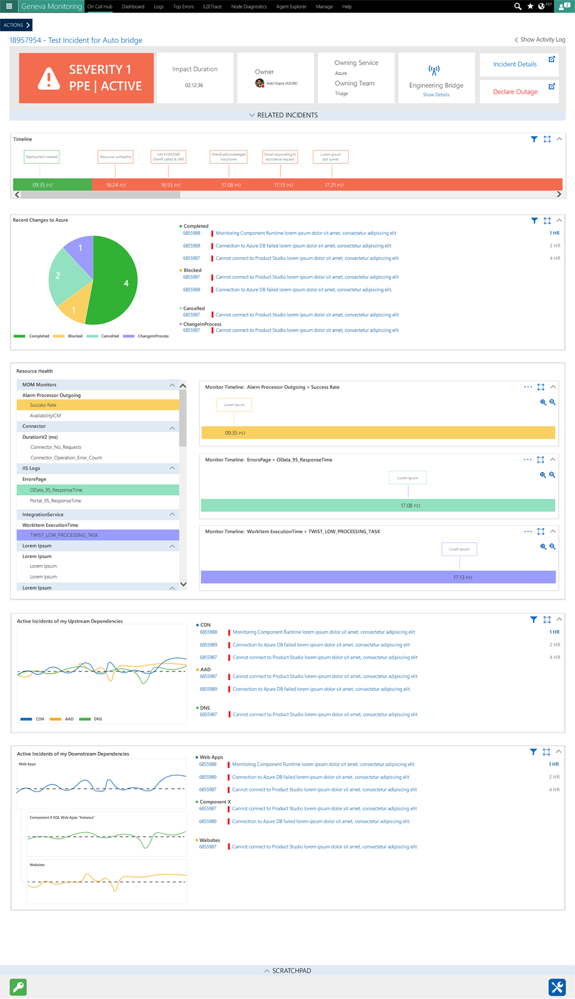

I created a dashboard experience for oncall engineers that collected and displayed data from incident management, analytics and monitoring and diagnostics.
After 8-10 rounds of team interviews and sit ins on live calls it was evident that lots of valuable information was being lost during outages and high severity incident solution planning. Engineers were also using several tools at once to view specific types of information.
The Oncall Hub was designed with this specific use case in mind. A centralized dashboard with surfaced information specifically associated with particular incidents.
This also included an activity log and scratchpad to remove need for Skype white boarding and replace with notes that could be saved for issues of similar nature.
View PDF 